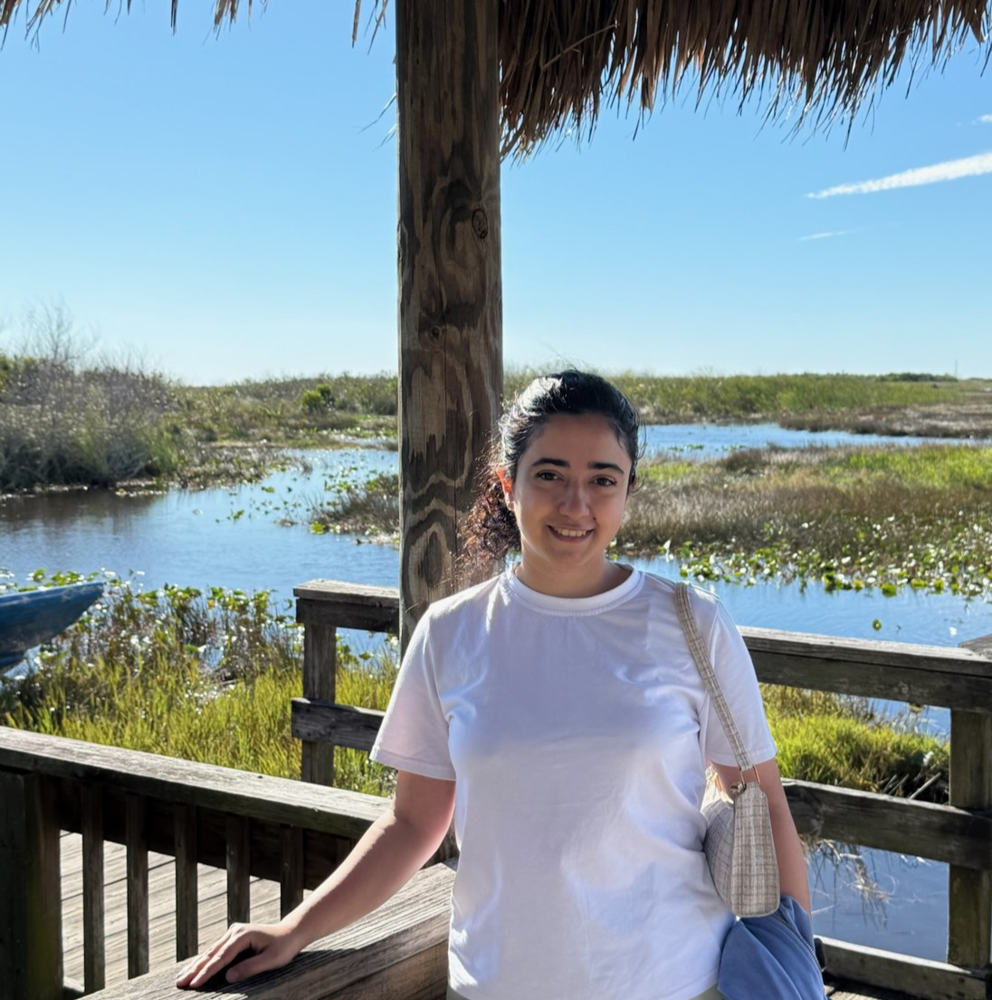

Optimal Networks for Agentic Information Aggregation
arXiv preprint, 2026
I am a PhD student in Computer Science at the University of California, Irvine, advised by Prof. David Eppstein. My interests include graph algorithms, computational geometry, combinatorial optimization, and theoretical aspects of information aggregation.

Optimal Networks for Agentic Information Aggregation
arXiv preprint, 2026
Optimal Rates for Agentic Networked Information Aggregation
arXiv preprint, 2026
Minimum-Weight Steiner Triangulation of Convex Polygons Requires Interior Steiner Points
CCCG 2026
Networked Information Aggregation for Binary Classification
ICML 2026
Accelerating Scientific Research with Gemini: Case Studies and Common Techniques
arXiv preprint, 2026
The Marco Polo Problem: A Combinatorial Approach to Geometric Localization
CCCG 2025
The Rectilinear Marco Polo Problem
CCCG 2025
Higher-Order Quantified Boolean Satisfiability
MFCS 2022
Independent Domination in Subcubic Graphs
Journal of Combinatorial Optimization, 2022